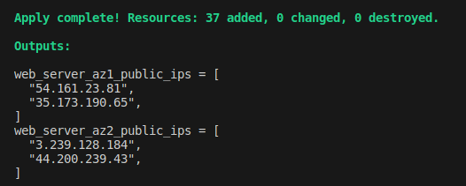
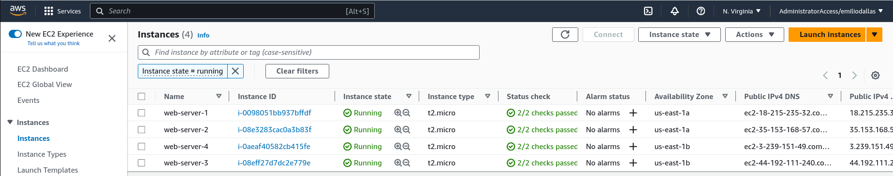
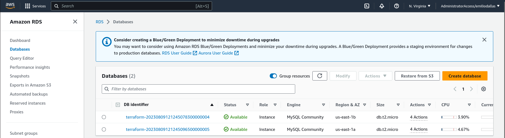
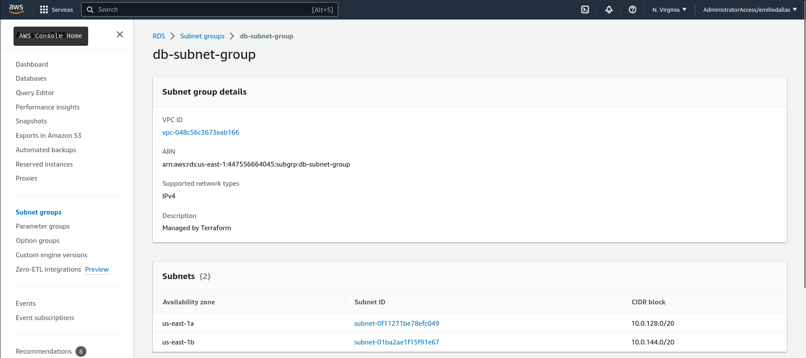
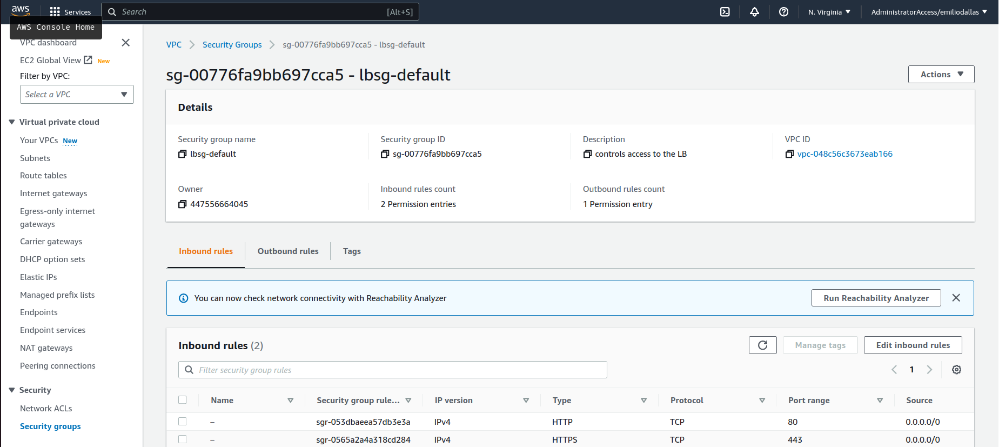
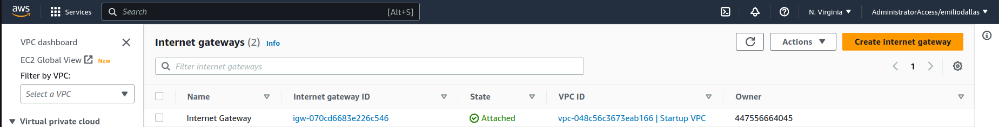
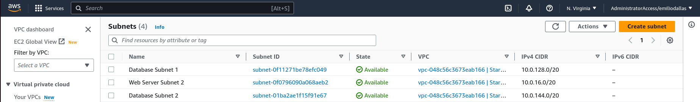
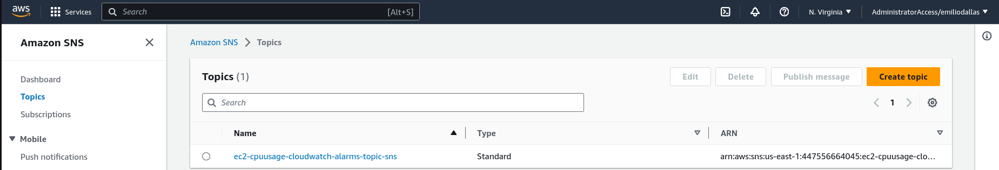
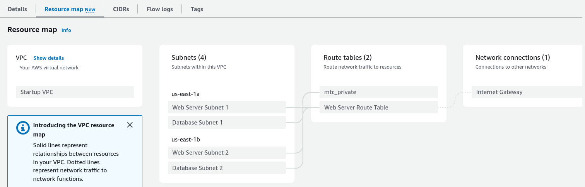

It creates four EC2 webservers in two public subnets in two availability zones.

Also creates two MySQL databases in RDS in two private subnets in two availability zones.


It creats automatically the port inbound and outbound permissions, configuring the security.

Defined a route table to grant internet access to the public subnetworks through a gateway.

The CIDR and the IP of the subnets can be easily configured on the subnets.tf file.

Also, a SNS alarm is configured to send e-mails if any of the EC2 CPUs surpass 70% usage.

To configure the alarms to other instances is pretty simple, you only have to add its instance ID to the list in alarm.tf.
The subnets are created on different available zones which are randomized so there is reliability. You can see the resource map:

AWS Infrastructure
In this project I used Terraform to implement a infrastructure in AWS using VPC, EC2 and RDS.
It uses AWS CLI SSO configuration to authenticate to your user. Make sure to have the right permissions on IAM.
The code takes aproximately 4~5 minutes to put everything on and running.